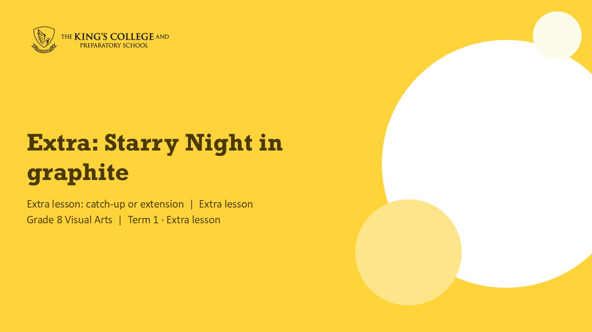

Term 1 · Extra lesson · Extra lesson: catch-up
Extra: vocabulary and catch-up
Start here
Today I will
- Today I will show what art words I know
- Today I will look up any words I am unsure of
- Today I will complete my missing journal pages
Think first
How many Term 1 art words can you list in one minute?
Words to know
- Value
- How light or dark something is.
- Contour line
- A line that follows the edge of a shape or form.
- Cross-hatching
- Layers of lines crossing each other to build tone.
- Cast shadow
- The shadow an object throws onto a surface.
- Complementary colours
- Colours opposite each other on the colour wheel.
- Focal point
- The place your eye goes to first in an artwork.
Slides

Notes
Vocabulary quiz and catch-up of journal pages.
Term 1 words to know
- Line and shape: Contour, expressive, directional; geometric and organic.
- Value and shading: Value scale, hatching, cross-hatching, stippling, blending.
- Light and shadow: Highlight, mid-tone, core shadow, reflected light, cast shadow.
- Colour and space: Primary, secondary, tertiary, complementary; foreground, background.
- Principles and analysis: Balance, contrast, emphasis; the five levels of visual analysis.
Remember
Use the words, and the words become yours.
Practical
You need: Vocabulary booklet, journal, pencils
Vocabulary quiz and catch-up
- Write the vocabulary quiz (15 minutes, booklets closed).
- Mark it with the memo and look up any words you got wrong.
- Write the meaning of each wrong word in your own words in your journal.
- Finish any missing journal pages (30 minutes).
- Show your teacher your completed pages before you pack up.
Test yourself
- What is the difference between a tint and a shade?
- Name the five levels of visual analysis.
- What is stippling?
Show answers
1. A tint is a colour plus white; a shade is a colour plus black. 2. First reaction, formal analysis, content, context (zeitgeist), opinion supported by facts. 3. Shading with dots.
Finished early?
Word-picture cards
Make three quick picture cards to help you remember tricky words.
- Choose three Term 1 words you found difficult.
- Draw three small boxes in your visual journal.
- In each box, draw a tiny picture that shows the word (e.g. dots for stippling).
- Write the word and a short meaning in your own words under each picture.